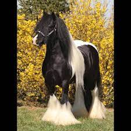
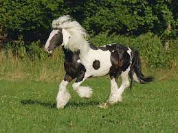

 Raza de caballo irish cob es una de las razas más antiguas reconocidas en Irlanda, junto con otras dos razas irlandesas, es una raza híbrida, resultado de un proceso de cruzamiento del siglo XVIII que involucró a los caballos de pura sangre ingleses, de Connemara e irlandeses de tiro. El caballo se desarrolló como un animal muy enérgico con gran resistencia, adecuado para montar o usar arneses. Sin embargo, la mayoría de las mazorcas irlandesas hoy en día se utilizan ampliamente para paseos en pony y paseos a caballo en la industria del turismo.

Aprobado por el Departamento de Agricultura, Alimentación y Marina para mantener el libro genealógico Irish Cob de forma temporal en octubre de 2013. El Irish Cob es una raza nativa irlandesa y, aunque tiene una larga historia, el libro genealógico se fundó oficialmente en 1998. Antes de esto, los linajes se transmitían verbalmente de generación en generación. Raza de caballo irish cob, la raza se conoce en todo el mundo con muchos nombres diferentes, como Gypsy Cob, Gypsy Horse, Gypsy Vanner y Irish Tinker.
La raza Irish Cob fue desarrollada por la comunidad itinerante en Irlanda. Durante cientos de años, estos caballos robustos y trabajadores tiraron de carros y carros por toda Irlanda, Gran Bretaña y Europa. Raza de caballo irish cob, la raza se adaptó para ser fuerte y versátil. Debían ser lo suficientemente suaves como para que los niños los manejaran, pero lo suficientemente resistentes como para tirar de un carro todo el día.
El Irish Cob fue creado por los viajeros para satisfacer sus necesidades en un caballo utilizable y estos caballos han sido apreciados durante mucho tiempo por su temperamento inteligente y dispuesto, su capacidad atlética y su capacidad de resistencia son la materia de la leyenda.
Irish Cobs tiene una apariencia imponente con un cuerpo robusto y poderoso. Se caracterizan por su acción de rodilla alta, excelente temperamento y cabello suelto. Sus espaldas anchas y cortas las hacen muy cómodas debajo de la silla. El Irish Cob es ideal para ciclistas de ocio, ya que soporta muy bien el peso, es versátil y amable. Son adecuados para niños, clubes de ponis y adultos para montar y conducir.